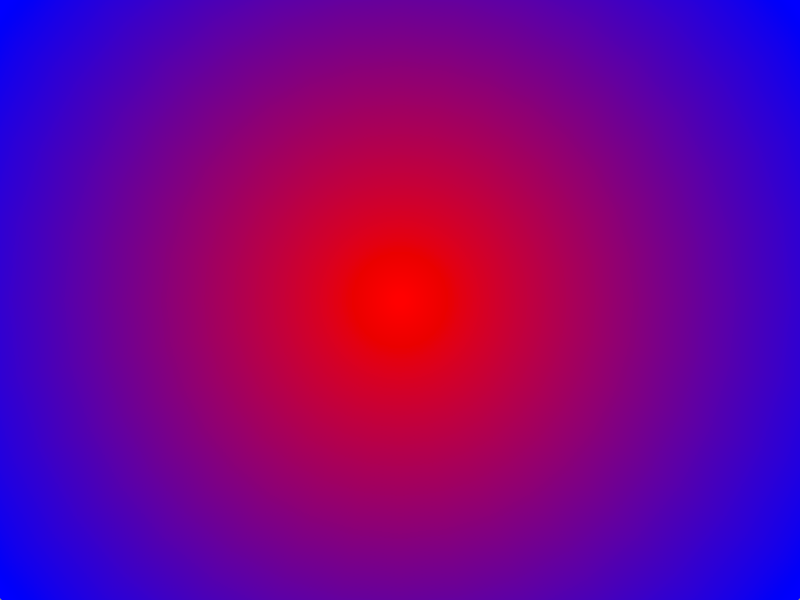

ofGraphics

global functions
- ofBackground()
- ofBackgroundGradient()
- ofBackgroundHex()
- ofBeginSaveScreenAsPDF()
- ofBeginSaveScreenAsSVG()
- ofBeginShape()
- ofBezierVertex()
- ofClear()
- ofClearAlpha()
- ofCurveVertex()
- ofCurveVertices()
- ofDisableAlphaBlending()
- ofDisableAntiAliasing()
- ofDisableBlendMode()
- ofDisableDepthTest()
- ofDisablePointSprites()
- ofDisableSmoothing()
- ofDrawBezier()
- ofDrawBitmapString()
- ofDrawBitmapStringHighlight()
- ofDrawCircle()
- ofDrawCurve()
- ofDrawEllipse()
- ofDrawLine()
- ofDrawRectRounded()
- ofDrawRectangle()
- ofDrawTriangle()
- ofEnableAlphaBlending()
- ofEnableAntiAliasing()
- ofEnableBlendMode()
- ofEnableDepthTest()
- ofEnablePointSprites()
- ofEnableSmoothing()
- ofEndSaveScreenAsPDF()
- ofEndSaveScreenAsSVG()
- ofEndShape()
- ofFill()
- ofGetBackgroundAuto()
- ofGetBackgroundColor()
- ofGetCoordHandedness()
- ofGetCurrentMatrix()
- ofGetCurrentNormalMatrix()
- ofGetCurrentOrientationMatrix()
- ofGetCurrentViewMatrix()
- ofGetCurrentViewport()
- ofGetFill()
- ofGetNativeViewport()
- ofGetRectMode()
- ofGetStyle()
- ofGetViewportHeight()
- ofGetViewportWidth()
- ofIsVFlipped()
- ofLoadIdentityMatrix()
- ofLoadMatrix()
- ofLoadViewMatrix()
- ofMultMatrix()
- ofMultViewMatrix()
- ofNextContour()
- ofNoFill()
- ofOrientationToDegrees()
- ofPopMatrix()
- ofPopStyle()
- ofPopView()
- ofPushMatrix()
- ofPushStyle()
- ofPushView()
- ofRotate()
- ofRotateX()
- ofRotateY()
- ofRotateZ()
- ofScale()
- ofSetBackgroundAuto()
- ofSetBackgroundColor()
- ofSetBackgroundColorHex()
- ofSetCircleResolution()
- ofSetColor()
- ofSetCoordHandedness()
- ofSetCurveResolution()
- ofSetDepthTest()
- ofSetDrawBitmapMode()
- ofSetHexColor()
- ofSetLineWidth()
- ofSetMatrixMode()
- ofSetPolyMode()
- ofSetRectMode()
- ofSetStyle()
- ofSetupScreen()
- ofSetupScreenOrtho()
- ofSetupScreenPerspective()
- ofTranslate()
- ofVertex()
- ofVertices()
- ofViewport()
ofBackground(...)
void ofBackground(int r, int g, int b, int a=255)
Documentation from code comments
Sets the background color.
It takes as input r,g,b (0-255). The background is cleared automatically, just before the draw() command, so if the background color is not changing, you could call this inside of setup() (once, at the start of the application). If the background color is changing, you can call this inside of update().
void ofApp::setup(){
ofBackground(255,0,0); // Sets the background color to red
}
ofBackgroundGradient(...)
void ofBackgroundGradient(const ofColor &start, const ofColor &end, ofGradientMode mode=OF_GRADIENT_CIRCULAR)
Documentation from code comments
Sets the background color to a gradient.
It takes as input 2 ofColor() objects and a Gradient Mode. Must be called in the draw() function.
Accepted modes are:
- Circular:
OF_GRADIENT_CIRCULAR - Linear:
OF_GRADIENT_LINEAR - Bar:
OF_GRADIENT_BAR
Background Gradient: Circular: 
void ofApp::draw(){
ofColor colorOne(255, 0, 0);
ofColor colorTwo(0, 0, 0);
ofBackgroundGradient(colorOne, colorTwo, OF_GRADIENT_CIRCULAR);
// Sets the background to a circular gradient
}
Background Gradient: Linear:
void ofApp::draw(){
ofColor colorOne(255, 0, 0);
ofColor colorTwo(0, 0, 0);
ofBackgroundGradient(colorOne, colorTwo, OF_GRADIENT_LINEAR);
// Sets the background to a linear gradient
}
Background Gradient: Bar:
void ofApp::draw(){
ofColor colorOne(255, 0, 0);
ofColor colorTwo(0, 0, 0);
ofBackgroundGradient(colorOne, colorTwo, OF_GRADIENT_BAR);
// Sets the background to a bar gradient
}
ofBackgroundHex(...)
void ofBackgroundHex(int hexColor, int alpha=255)
Sets the background color using a hex color value.
void ofApp::setup(){
ofBackgroundHex(0xff0000); // Sets the background color to red
}
ofBeginSaveScreenAsPDF(...)
void ofBeginSaveScreenAsPDF(string filename, bool bMultipage=false, bool b3D=false, ofRectangle outputsize)
Begins render to pdf. OpenFrameworks allows rendering of 2D graphics to pdf via the ofCairoRenderer. ofBeginSaveScreenAsPDF is called before drawing. When done drawing call ofEndSaveScreenAsPDF() to output the file.
void ofApp::setup(){
if( oneShot ){
ofBeginSaveScreenAsPDF("screenshot-"+ofGetTimestampString()+".pdf", false);
}
ofSetColor(54,54,54);
ofEllipse(100,100,200,200);
if( oneShot ){
ofEndSaveScreenAsPDF();
oneShot = false;
}
}
ofBeginSaveScreenAsSVG(...)
void ofBeginSaveScreenAsSVG(string filename, bool bMultipage=false, bool b3D=false, ofRectangle outputsize)
Documentation from code comments
Begin rendering to a SVG file.
See also: ofEndSaveScreenAsSVG(), ofBeginSaveScreenAsPDF()
ofBeginShape()
void ofBeginShape()
Call this to start drawing a new shape. Needs to be followed by a list of vertex points and lastly a call to ofEndShape().
//draws a star
ofSetPolyMode(OF_POLY_WINDING_NONZERO);
ofBeginShape();
ofVertex(400,135);
ofVertex(215,135);
ofVertex(365,25);
ofVertex(305,200);
ofVertex(250,25);
ofEndShape();
ofBezierVertex(...)
void ofBezierVertex(float x1, float y1, float x2, float y2, float x3, float y3)
Describes a bezier curve through three points of a shape. To be called between ofBeginShape() and ofEndShape().
ofBezierVertex(...)
void ofBezierVertex(float x1, float y1, float z1, float x2, float y2, float z2, float x3, float y3, float z3)
ofClear(...)
void ofClear(float r, float g, float b, float a)
Clears the color and depth bits of current renderer and replaces it with an RGB color.
When drawing to the screen, ofClear(…) will clear the screen entirely.
void ofApp::draw() {
ofClear ( 255, 0, 0 );
// Clears current screen and replaces it with red.
// Screen will render as a flat color.
}
When using the opengl renderer and drawing into an FBO, ofClear(...) will clear that buffer rather than the main screen.
void ofApp::draw() {
ofFbo myFbo;
myFbo.allocate ( 300, 300 );
myFbo.begin();
ofClear ( 255, 0, 0 );
// Clears FBO buffer and replaces it with red.
// No effect in current drawing screen.
myFbo.end();
}
ofClear(…) is based on glClear (http://www.opengl.org/sdk/docs/man/xhtml/glClear.xml).
ofClear(...)
void ofClear(float brightness, float a)
Clears the color and depth bits of current renderer and replaces it with a grayscale value.
void ofApp::draw(){
ofColor myColor;
myColor.set ( 128 );
ofClear ( myColor );
// Clears current screen and replaces it with a grayscale value.
}
ofClear(...)
void ofClear(const ofColor &c)
Clears the color and depth bits of current renderer and replaces it with an ofColor.
void ofApp::draw(){
ofColor myColor;
myColor.set ( 0, 0, 255 );
ofClear ( myColor );
// Clears current screen and replaces it with myColor.
}
ofCurveVertex(...)
void ofCurveVertex(float x, float y)
Specifies a single point of a shape. The difference from ofVertex is that the line describing the edge of the shape between two points will be a curve as opposed to a straight line. The curve is automatically generated using the catmull from formula. To be called between ofBeginShape() and ofEndShape().
ofCurveVertices(...)
void ofCurveVertices(const vector< ofPoint > &curvePoints)
Draws a curve through a series of vertices stored as a vector of ofPoints. Should be called between ofBeginShape() and ofEndShape().
ofDisableAlphaBlending()
void ofDisableAlphaBlending()
Turns off alpha blending.
void ofApp::draw(){
ofEnableAlphaBlending(); // turn on alpha blending
ofSetColor(255,0,0,127); // red, 50% transparent
ofDrawRectangle(20,20,100,100); // draws the rect with alpha
ofDisableAlphaBlending(); // turn off alpha
ofDrawRectangle(120,20,100,100); // draws the rect without alpha
}
ofDisableDepthTest()
void ofDisableDepthTest()
Turns off depth testing so rendering happens in draw order rather than by z-depth. Turning off depth test is useful for combining 3d scenes with 2d overlays such as a control panel.
void ofApp::draw(){
ofPushMatrix();
ofTranslate( ofGetWidth()/2, ofGetHeight()/2, 0 );
ofEnableDepthTest();
ofSetColor(255);
ofDrawSphere(0,0,100,60);
ofSetColor(255,0,255);
ofDrawSphere(50,0,50,100);
ofDisableDepthTest();
ofSetColor(0);
ofDrawRectangle(75,75,120,30);
ofSetColor(255);
ofDrawBitmapString("Some bubbles.",85,90);
ofPopMatrix();
}
ofDisableSmoothing()
void ofDisableSmoothing()
Turns off smoothing. Currently, this only works for lines. You can draw a filled object, and then draw the outline with smoothing enabled to get smoothing effects on filled shapes.
ofDrawBezier(...)
void ofDrawBezier(float x0, float y0, float x1, float y1, float x2, float y2, float x3, float y3)
ofDrawBezier(...)
void ofDrawBezier(float x0, float y0, float z0, float x1, float y1, float z1, float x2, float y2, float z2, float x3, float y3, float z3)
ofDrawBitmapString(...)
void ofDrawBitmapString(const T &textString, float x, float y, float z)
Draws a bitmapped string, on screen, at point (x,y). For example, you can write some text on screen like this:
void ofApp::draw(){
ofDrawBitmapString("hi!!", 100,100);
}
Your strings can even be multiline:
ofDrawBitmapString("a test
of multiline
text", 100,100);
you can also using dynamically generated strings. For example, to print the frame rate:
string fpsStr = "frame rate: "+ofToString(ofGetFrameRate(), 2);
ofDrawBitmapString(fpsStr, 100,100);
Please note, ofDrawBitmapString wraps a glut function that uses glDrawPixels. On some graphics cards, you may discover that glDrawPixels is slow (or even, very slow). If so, you might want to investigate using ofTrueTypeFont with a small typeface, non-anti-aliased, as a suitable alternative.
ofDrawBitmapString(...)
void ofDrawBitmapString(const T &textString, const ofPoint &p)
Documentation from code comments
}
ofDrawBitmapString(...)
void ofDrawBitmapString(const T &textString, float x, float y)
Documentation from code comments
Draws a bitmapped string, on screen, at point (x,y).
For example, you can write some text on screen like this:
void ofApp::draw(){
ofDrawBitmapString("hi!!", 100,100);
}
Your strings can even be multiline:
ofDrawBitmapString("a test
of multiline
text", 100,100);
you can also using dynamically generated strings. For example, to print the frame rate:
string fpsStr = "frame rate: "+ofToString(ofGetFrameRate(), 2);
ofDrawBitmapString(fpsStr, 100,100);
\note ofDrawBitmapString wraps a glut function that uses glDrawPixels. On some graphics cards, you may discover that glDrawPixels is slow (or even, very slow). If so, you might want to investigate using ofTrueTypeFont with a small typeface, non-anti-aliased, as a suitable alternative.
See also: ofTrueTypeFont
ofDrawBitmapString(...)
void ofDrawBitmapString(const string &textString, float x, float y, float z)
ofDrawBitmapStringHighlight(...)
void ofDrawBitmapStringHighlight(string text, const ofPoint &position, const ofColor &background=black, const ofColor &foreground=white)
ofDrawBitmapStringHighlight(...)
void ofDrawBitmapStringHighlight(string text, int x, int y, const ofColor &background=black, const ofColor &foreground=white)
ofDrawCircle(...)
void ofDrawCircle(float x, float y, float radius)
Documentation from code comments
Draws a circle, centered at x,y, with a given radius.
void ofApp::draw(){
ofDrawCircle(150,150,100);
}
Please keep in mind that drawing circle with different outline color and fill requires calling ofNoFill and ofSetColor for drawing stroke and ofFill and again ofSetColor for filled solid color circle.
ofDrawCurve(...)
void ofDrawCurve(float x0, float y0, float x1, float y1, float x2, float y2, float x3, float y3)
Documentation from code comments
Draws a curve from point (x1, y1) to point (x2, y2). The curve is shaped by the two control points (x0,y0) and (x3,y3).
ofDrawCurve(...)
void ofDrawCurve(float x0, float y0, float z0, float x1, float y1, float z1, float x2, float y2, float z2, float x3, float y3, float z3)
Documentation from code comments
Draws a 3-dimensional curve from point (x1, y1, z1) to point (x2, y2, z2). The curve is shaped by the two control points (x0, y0, z0) and (x3, y3, z3).
ofDrawEllipse(...)
void ofDrawEllipse(float x, float y, float width, float height)
Documentation from code comments
Draws an ellipse from point (x,y) with a given width (w) and height (h).
void ofApp::draw(){
ofDrawEllipse(10,10,50,30);
}
ofDrawLine(...)
void ofDrawLine(float x1, float y1, float x2, float y2)
Documentation from code comments
Draws a line between two points: (x1,y1),(x2,y2).
void ofApp::draw(){
ofDrawLine(10,10,100,100);
}
ofDrawRectRounded(...)
void ofDrawRectRounded(const ofRectangle &b, float r)
Documentation from code comments
Draws a rounded rectangle from the given rectangle using given radius.
void ofApp::draw(){
ofRectangle myRect;
myRect.x = 10;
myRect.y = 10;
myRect.width = 100;
myRect.height = 100;
ofDrawRectRounded(myRect, 10);
}
ofDrawRectRounded(...)
void ofDrawRectRounded(const ofPoint &p, float w, float h, float r)
Documentation from code comments
Draws a rectangle from point p with a given width, height and radius of rounded corners.
void ofApp::draw(){
ofPoint p;
p.set ( 10, 10 );
ofDrawRectRounded( p, 100, 100, 10 );
}
ofDrawRectRounded(...)
void ofDrawRectRounded(float x, float y, float w, float h, float r)
Documentation from code comments
Draws a rectangle from point X, Y with a given width, height and radius of rounded corners.
void ofApp::draw(){
ofDrawRectRounded(10, 10, 100, 100, 10);
}
ofDrawRectRounded(...)
void ofDrawRectRounded(float x, float y, float z, float w, float h, float r)
Documentation from code comments
Draws a rectangle from point X, Y, at depth Z with a given width, height and radius of rounded corners.
void ofApp::draw(){
ofDrawRectRounded(10, 10, 10, 100, 100, 10);
}
ofDrawRectRounded(...)
void ofDrawRectRounded(const ofPoint &p, float w, float h, float topLeftRadius, float topRightRadius, float bottomRightRadius, float bottomLeftRadius)
Documentation from code comments
Draws a rounded rectangle from point X, Y, at depth Z with a given width, height and radius of rounded corners.
void ofApp::draw(){
ofDrawRectRounded(10, 10, 10, 100, 100, 10);
}
ofDrawRectRounded(...)
void ofDrawRectRounded(const ofRectangle &b, float topLeftRadius, float topRightRadius, float bottomRightRadius, float bottomLeftRadius)
Documentation from code comments
Draws a rounded rectangle from the given rectangle using different given radius for each of the corners.
void ofApp::draw(){
ofRectangle myRect;
myRect.x = 10;
myRect.y = 10;
myRect.width = 100;
myRect.height = 100;
ofDrawRectRounded( myRect, 10, 20, 30, 40 );
}
ofDrawRectRounded(...)
void ofDrawRectRounded(float x, float y, float z, float w, float h, float topLeftRadius, float topRightRadius, float bottomRightRadius, float bottomLeftRadius)
Documentation from code comments
Draws a rounded rectangle from point X, Y, at depth Z with a given width, height and different radius for each rounded corner.
void ofApp::draw(){
ofDrawRectRounded(10, 10, 10, 100, 100, 10, 20, 30, 40);
}
ofDrawRectangle(...)
void ofDrawRectangle(float x1, float y1, float w, float h)
Documentation from code comments
Draws a rectangle from point x,y with a given width and height.
void ofApp::draw(){
ofDrawRect(10,10,100,100);
}
ofDrawRectangle(...)
void ofDrawRectangle(const ofRectangle &r)
Documentation from code comments
Draws an rectangle from the given rectangle.
void ofApp::draw(){
ofRectangle rect;
rect.x = 10;
rect.y = 10;
rect.width = 100;
rect.height = 100;
ofDrawRectangle(rect);
}
ofDrawRectangle(...)
void ofDrawRectangle(const ofPoint &p, float w, float h)
Documentation from code comments
Draws an rectangle from point p, with a given width and height.
void ofApp::draw(){
ofPoint p; // create a point P
p.x = 10; // set the x of the point
p.y = 10; // set the y of the point
ofDrawRectangle(p, 80, 80); // Draw the rectangle
}
ofDrawRectangle(...)
void ofDrawRectangle(float x, float y, float z, float w, float h)
Documentation from code comments
Draws an rectangle from point X, Y at depth Z with a given width and height.
void ofApp::draw(){
ofDrawRectangle(10,10,-100, 80, 80); // Draw a rectangle at 100 pixels in depth
}
ofDrawTriangle(...)
void ofDrawTriangle(float x1, float y1, float x2, float y2, float x3, float y3)
Documentation from code comments
Draws a triangle, with the three points: (x1,y1),(x2, y2),(x3, y3).
void ofApp::draw(){
ofDrawTriangle(50,10,10,40,90,40);
}
ofDrawTriangle(...)
void ofDrawTriangle(float x1, float y1, float z1, float x2, float y2, float z2, float x3, float y3, float z3)
ofEnableAlphaBlending()
void ofEnableAlphaBlending()
Turns on alpha blending (which is on by default since OF version 0.8.0). It simply wraps opengl commands that enable blending, and turn on a common blend mode.
void ofApp::draw(){
ofEnableAlphaBlending(); // turn on alpha blending
ofSetColor(255,0,0,127); // red, 50% transparent
ofDrawRectangle(20,20,100,100); // draws the rect with alpha
ofDisableAlphaBlending(); // turn off alpha
ofDrawRectangle(120,20,100,100); // draws the rect without alpha
}
ofEnableBlendMode(...)
void ofEnableBlendMode(ofBlendMode blendMode)
Sets and enables the blend mode for drawing. The options are:
OF_BLENDMODE_DISABLED
OF_BLENDMODE_ALPHA
OF_BLENDMODE_ADD
OF_BLENDMODE_SUBTRACT
OF_BLENDMODE_MULTIPLY
OF_BLENDMODE_SCREEN
There is a blendingExample in the openFrameworks examples > graphics
ofEnableDepthTest()
void ofEnableDepthTest()
Turns on depth testing so rendering happens according to z-depth rather than draw order.
void ofApp::draw(){
ofPushMatrix();
ofTranslate( ofGetWidth()/2, ofGetHeight()/2, 0 );
ofEnableDepthTest(); // enable depth test
ofSetColor(255);
ofDrawSphere(0,0,100,60); // draw 3d sphere
ofSetColor(255,0,255);
ofDrawSphere(50,0,50,100);
ofDisableDepthTest(); // disable depth test
// draw 2d overlay
ofSetColor(0);
ofDrawRectangle(75,75,120,30);
ofSetColor(255);
ofDrawBitmapString("Some bubbles.",85,90);
ofPopMatrix();
}
Documentation from code comments
Turns on depth testing so rendering happens according to z-depth rather than draw order.
See also: ofDisableDepthTest()
ofEnablePointSprites()
void ofEnablePointSprites()
Turns on point sprite. Textures can be mapped onto points. By default, point size is 1pt. So texture is not shown correctly. You can change point size by glPointSize(GLfloat size).
ofEnableSmoothing()
void ofEnableSmoothing()
Turns on smoothing. Currently, this only works for lines. You can draw a filled object, and then draw the outline with smoothing enabled to get smoothing effects on filled shapes.
ofEndSaveScreenAsPDF()
void ofEndSaveScreenAsPDF()
Terminates draw to pdf through ofCairoRenderer and outputs the pdf file.
void ofApp::setup(){
if( oneShot ){
ofBeginSaveScreenAsPDF("screenshot-"+ofGetTimestampString()+".pdf", false);
}
ofSetColor(54,54,54);
ofEllipse(100,100,200,200);
if( oneShot ){
ofEndSaveScreenAsPDF();
oneShot = false;
}
}
Documentation from code comments
Terminates draw to PDF through ofCairoRenderer and outputs the file.
See also: ofBeginSaveScreenAsPDF()
ofEndSaveScreenAsSVG()
void ofEndSaveScreenAsSVG()
Documentation from code comments
Terminates draw to SVG and outputs the file.
See also: ofBeginSaveScreenAsSVG()
ofEndShape(...)
void ofEndShape(bool bClose=false)
This tells the program that your shape is finished and that it should now draw it to the screen. If you set the optional 'bClose' argument to true it will automatically close your shape for you.'bClose' is set to false by default. This function must be called otherwise you will not see your shape.
Documentation from code comments
This tells the program that your shape is finished and that it should now draw it to the screen.
This function must be called otherwise you will not see your shape.
Parameters: bClose If you set it to true it will automatically close your shape for you. Default false.
ofFill()
void ofFill()
Draw shapes filled with the current draw color.
void ofApp::draw(){
ofSetColor(0,0,255);
ofFill();
ofDrawRectangle(10,10,100,100); //draws the rectangle filled in blue
}
ofGetBackgroundColor()
ofColor ofGetBackgroundColor()
Documentation from code comments
Returns the current background color as an ofColor.
ofGetCurrentMatrix(...)
ofMatrix4x4 ofGetCurrentMatrix(ofMatrixMode matrixMode)
Documentation from code comments
Query the current (oF internal) Transformation Matrix state.
ofGetCurrentNormalMatrix()
ofMatrix4x4 ofGetCurrentNormalMatrix()
Documentation from code comments
Query the current (oF internal) Normal Matrix state. \note The matrix returned is the transposed of the inverse of the view matrix
Currently, only GL Programmable Renderer and GL Renderer
implement ofGetCurrentNormalMatrix.
ofGetCurrentOrientationMatrix()
ofMatrix4x4 ofGetCurrentOrientationMatrix()
Documentation from code comments
Query the current (oF internal) Orientation Matrix state. \note The matrix returned is the matrix openFrameworks uses internally to calculate the (final, oriented) projection matrix as it is passed on to the GPU.
Currently, only GL Programmable Renderer and GL Renderer
implement ofGetCurrentOrientationMatrix.
ofGetCurrentViewport()
ofRectangle ofGetCurrentViewport()
Documentation from code comments
Get the position and size of the current viewport
Returns: A rectangle describing the viewport
ofGetNativeViewport()
ofRectangle ofGetNativeViewport()
Documentation from code comments
Get the position and size of the native viewport
Returns: A rectangle describing the viewport
ofGetRectMode()
ofRectMode ofGetRectMode()
Tells you if rect drawing mode is set to drawn from the center or drawn from the top left corner, as set with the ofSetRectMode() function.
void ofApp::draw(){
if(ofGetRectMode() == OF_RECTMODE_CORNER){
ofDrawRectangle(10,10,80,80);
}
else {
ofDrawRectangle(50,50,80,80);
}
}
ofGetViewportHeight()
int ofGetViewportHeight()
Documentation from code comments
Get the height of the current viewport
Returns: A height in pixels
ofGetViewportWidth()
int ofGetViewportWidth()
Documentation from code comments
Get the width of the current viewport
Returns: A width in pixels
ofIsVFlipped()
bool ofIsVFlipped()
Documentation from code comments
Get if view is flipped vertically
ofLoadIdentityMatrix()
void ofLoadIdentityMatrix()
Documentation from code comments
} \name Matrix Transformation {
ofNextContour(...)
void ofNextContour(bool bClose=false)
Allows you to draw multiple contours within one shape. Call this between ofBeginShape() and ofEndShape() to create a new contour for your shape. If you set the optional argument 'bClose' to true then the previous contour will be automatically closed. 'bClose' is set to false by default.
ofNoFill()
void ofNoFill()
Draw shapes as outlines with the current draw color.
void ofApp::draw(){
ofSetColor(0,0,255);
ofNoFill();
ofDrawRectangle(10,10,100,100); //draws only the outline in blue
}
ofPopMatrix()
void ofPopMatrix()
ofPopMatrix() restores the prior coordinate system.
void ofApp::draw(){
ofCircle(10, 10, 5); // draw a circle
ofPushMatrix(); // push the current coordinate position
ofRotateX(90); // change the coordinate system
ofDrawRectangle(10,10,40,40); // draw a rect
ofPopMatrix(); // recall the pushed coordinate position
}
Documentation from code comments
Restores the prior coordinate system.
See also: ofPushMatrix()
ofPopStyle()
void ofPopStyle()
ofPopStyle() restores the prior style settings. It needs to be called after ofPushStyle.
void ofApp::draw(){
ofCircle(10,10,5);
ofPushStyle(); // push the current style for use later
ofFill();
ofsetColor(255,0,0);
ofEllipse(30,10,40,40);
ofPopStyle(); // recall the pushed style
}
Documentation from code comments
Restores the prior style settings. It needs to be called after ofPushStyle.
See also: ofPushStyle()
ofPushMatrix()
void ofPushMatrix()
ofPushMatrix saves the current coordinate system allowing users to develop specific movements in some graphic objects. ofPopMatrix needs to be called after. In the following example we only rotate the square.
void ofApp::draw(){
ofCircle(10, 10, 5); // draw a circle
ofPushMatrix(); // push the current coordinate position
ofRotateX(90); // change the coordinate system
ofDrawRectangle(10,10,40,40); // draw a rect
ofPopMatrix() // recall the pushed coordinate position
}
ofPushStyle()
void ofPushStyle()
ofPushStyle saves the current style settings for the ofGraphics after its call. Usage of ofPushStyle and ofPopStyle allow users to have more control of certain graphics elements. All the style that applies to certain elements is controled using ofStyle class. See ofStyle type. In the following example the properties of being red and filled only applies to the ellipse:
void ofApp::draw(){
ofCircle(10,10,5);
ofPushStyle(); // push the current style for use later
ofFill();
ofSetColor(255,0,0);
ofEllipse(30,10,40,40);
ofPopStyle(); // recall the pushed style
}
ofRotate(...)
void ofRotate(float degrees, float vecX, float vecY, float vecZ)
ofRotate produces a rotation of angle "degrees" around the vector (vecX,vecY,vecZ). "degrees"specifies the angle of rotation, in degrees. vecX, vecY, vecZ specify the x, y, and z coordinates of a vector, respectively. All graphics drawn after ofRotate is called are rotated. Use ofPushMatrix and ofPopMatrix to save and restore the unrotated coordinate system.
void ofApp::draw(){
ofRotate(50, 1, 0.5, 0); //rotates the coordinate system 50 degrees along the x-axis and 25 degrees on the y-axis
ofDrawRectangle(20,20,100,100);
}
Documentation from code comments
Produces a rotation around the vector (vecX,vecY,vecZ).
All graphics drawn after ofRotate is called are rotated. Use ofPushMatrix() and ofPopMatrix() to save and restore the unrotated coordinate system.
void ofApp::draw(){
ofRotate(50, 1, 0.5, 0); //rotates the coordinate system 50 degrees along the x-axis and 25 degrees on the y-axis
ofDrawRectangle(20,20,100,100);
}
Parameters: degrees Specifies the angle of rotation, in degrees. vecX specifies the x coordinates of a vector vecY specifies the y coordinates of a vector vecZ specifies the z coordinates of a vector
ofRotate(...)
void ofRotate(float degrees)
Documentation from code comments
Rotate around the z-axis
ofRotateX(...)
void ofRotateX(float degrees)
ofRotateX produces a rotation of angle "degrees" around the X-axis of our coordinate system represented by the vector (1,0,0)."degrees"specifies the angle of rotation, in degrees.
void ofApp::draw(){
ofRotateX(45); //rotates the coordinate system 45 degrees around the x-axis
ofDrawRectangle(20,20,100,100);
}
Documentation from code comments
Produces a rotation around the X-axis of our coordinate system represented by the vector (1,0,0).
void ofApp::draw(){
ofRotateX(45); //rotates the coordinate system 45 degrees around the x-axis
ofDrawRea20,20,100,100);
}
Parameters: degrees Specifies the angle of rotation, in degrees.
ofRotateY(...)
void ofRotateY(float degrees)
ofRotateY produces a rotation of angle "degrees" around the Y-axis of our coordinate system represented by the vector (0,1,0). "degrees"specifies the angle of rotation, in degrees.
void ofApp::draw(){
ofRotateY(45); //rotates the coordinate system 45 degrees around the x-axis
ofDrawRectangle(20,20,100,100);
}
Documentation from code comments
Produces a rotation around the Y-axis of our coordinate system represented by the vector (1,0,0).
void ofApp::draw(){
ofRotateY(45); //rotates the coordinate system 45 degrees around the x-axis
ofDrawRectangle(20,20,100,100);
}
Parameters: degrees Specifies the angle of rotation, in degrees.
ofRotateZ(...)
void ofRotateZ(float degrees)
ofRotateZ produces a rotation of angle "degrees" around the Z-axis of our coordinate system represented by the vector (0,0,1). "degrees"specifies the angle of rotation, in degrees.
void ofApp::draw(){
ofRotateZ(45); //rotates the coordinate system 45 degrees around the x-axis
ofDrawRectangle(20,20,100,100);
}
Documentation from code comments
Produces a rotation around the Z-axis of our coordinate system represented by the vector (1,0,0).
void ofApp::draw(){
ofRotateZ(45); //rotates the coordinate system 45 degrees around the x-axis
ofDrawRea20,20,100,100);
}
Parameters: degrees Specifies the angle of rotation, in degrees.
ofScale(...)
void ofScale(float xAmnt, float yAmnt, float zAmnt)
ofScale produces a nonuniform scaling along the x, y, and z axes. The three parameters xAmnt, yAmnt and zAmnt indicate the desired scale factor along each of the three axes. e.g:
void ofApp::draw(){
ofScale(0.5,1,1); // scale 0.5 in height
ofDrawRectangle(10,10,40,40); // draw a square rectangle
}
Rectangle width will be now 20px heigh!
ofSetBackgroundAuto(...)
void ofSetBackgroundAuto(bool bManual)
Sets the background clearing function to be auto (default) or not. If non-auto, then background clearing will not occur per frame (at the start of draw) but rather, whenever ofBackground is called.
void ofApp::setup(){
ofSetBackgroundAuto(false); //disable automatic background redraw
}
void ofApp::draw(){
if(ofGetFrameNum() % 10 == 0){
// draws a black background every 10 frames
ofSetBackground(0,0,0);
}
}
ofSetBackgroundColor(...)
void ofSetBackgroundColor(int r, int g, int b, int a=255)
Sets the background color. It takes as input r,g,b (0-255). The background is cleared automatically, just before the draw() command, so if the background color is not changing, you could call this inside of setup() (once, at the start of the application). If the background color is changing, you can call this inside of update().
void ofApp::setup(){
ofSetBackgroundColor(255,0,0); // Sets the background color to red
}
ofSetBackgroundColorHex(...)
void ofSetBackgroundColorHex(int hexColor, int alpha=255)
Sets the background color using a hex color value.
void ofApp::setup(){
ofSetBackgroundColorHex(0xff0000); // Sets the background color to red
}
ofSetCircleResolution(...)
void ofSetCircleResolution(int res)
Sets the resolution for the ofCircle command. By default, the circle is 22 points, but if you need to draw larger circles, you can adjust the resolution using this command. all circles are cached in opengl using a display list for optimization purposes.
void ofApp::draw(){
ofSetCircleResolution(10);
ofCircle(150,150,100); //draws a rough circle
ofSetCircleResolution(100);
ofCircle(450,150,100); //draws a fine circle
}
ofSetColor(...)
void ofSetColor(int r, int g, int b)
Sets the draw color with r,g,b, 0-255. For example, red (0xff0000) would be: ofSetColor(255,0,0). This affects not only the color of shapes drawn with ofDrawRectangle(...), ofCircle(...), etc, but also the tint of images and textures.
void ofApp::draw(){
ofSetColor(0,0,255); //set te color to blue
ofDrawRectangle(10,10,100,100);
}
ofSetColor(...)
void ofSetColor(int r, int g, int b, int a)
sets the draw color with r,g,b,a 0-255. For alpha (transparency), you must first enable transparent blending (turned off by default for performance reasons), and draw in the proper z-order (objects in the back drawn first). For example, to draw a transparent red rectangle:
void ofApp::draw(){
ofEnableAlphaBlending(); // turn on alpha blending
ofSetColor(255,0,0,127); // red, 50% transparent
ofDrawRectangle(20,20,100,100);
ofDisableAlphaBlending(); // turn it back off, if you don't need it
}
ofSetColor(...)
void ofSetColor(int gray)
Sets the draw color with r,g,b, passed in as a hex. Hex is a conventient way to write colors. Some examples:
void ofApp::draw(){
ofSetColor(0xffffff); // white (255,255,255)
ofSetColor(0x000000); // black (0,0,0);
ofSetColor(0x00ff00); // green (0,255,0);
}
ofSetDepthTest(...)
void ofSetDepthTest(bool depthTest)
Set depth testing on or off to either sort by z-depth (true) or draw order (false).
ofSetDrawBitmapMode(...)
void ofSetDrawBitmapMode(ofDrawBitmapMode mode)
takes OF_BITMAPMODE_SIMPLE, OF_BITMAPMODE_SCREEN, OF_BITMAPMODE_VIEWPORT, OF_BITMAPMODE_MODEL and OF_BITMAPMODE_MODEL_BILLBOARD
Documentation from code comments
Set the bitmap drawing mode
Valid modes:
OF_BITMAPMODE_SIMPLE
OF_BITMAPMODE_SCREEN
OF_BITMAPMODE_VIEWPORT
OF_BITMAPMODE_MODEL
OF_BITMAPMODE_MODEL_BILLBOARD
ofSetHexColor(...)
void ofSetHexColor(int hexColor)
Sets the draw color with a hex value.
void ofApp::draw(){
ofSetHexColor(0xff0000); //set te color to red
ofDrawRectangle(10,10,100,100);
}
Documentation from code comments
Sets the draw color with r,g,b, passed in as a hex. Hex is a conventient way to write colors.
void ofApp::draw(){
ofSetColor(0xffffff); // white (255,255,255)
ofSetColor(0x000000); // black (0,0,0);
ofSetColor(0x00ff00); // green (0,255,0);
}
ofSetLineWidth(...)
void ofSetLineWidth(float lineWidth)
ofSetLineWidth sets the width of the ofLines called after.
void ofApp::draw(){
ofSetLineWidth(1); // set line width to 1
ofLine(10,10,100,100); // draw thin line
ofSetLineWidth(10); // set line width to 10
ofLine(10,100,100,10); // draw fat line
}
ofSetPolyMode(...)
void ofSetPolyMode(ofPolyWindingMode mode)
Documentation from code comments
Sets the drawing behavior for overlapping parts of the same polygon.
Possible modes are:
OF_POLY_WINDING_ODD
OF_POLY_WINDING_NONZERO
OF_POLY_WINDING_POSITIVE
OF_POLY_WINDING_NEGATIVE
OF_POLY_WINDING_ABS_GEQ_TWO
ofSetRectMode(...)
void ofSetRectMode(ofRectMode mode)
Documentation from code comments
Sets the mode for drawing rectangles and other rectangular objects, if
they are corner aligned, or drawn so that the x,y position is the center
of the rectangle. possible options are OF_RECTMODE_CENTER and
OF_RECTMODE_CORNER. This affects not only how ofDrawRectangle() objects are drawn,
but also ofTexture (and therefore ofImage) objects.
void ofApp::draw(){
ofSetRectMode(OF_RECTMODE_CORNER); //set rectangle mode to the corner
ofDrawRectangle(10,10,80,80);
ofSetRectMode(OF_RECTMODE_CENTER); //set rectangle mode to the center
ofDrawRectangle(50,50,80,80);
// both rectangles are drawn at the same place
}
ofSetStyle(...)
void ofSetStyle(ofStyle style)
We use ofSetStyle to set the current style of the ofGraphics. Parameter style contains information of the graphics style such as ofColor, ofFill, polyMode and others. See ofStyle for more details.
ofSetupScreenOrtho(...)
void ofSetupScreenOrtho(float width, float height, float nearDist, float farDist)
ofSetupScreenPerspective(...)
void ofSetupScreenPerspective(float width, float height, float fov, float nearDist, float farDist)
ofTranslate(...)
void ofTranslate(float x, float y, float z)
ofTranslate produces a translation by (x,y,z) vector of our coordinate system. The call of ofTranslate modifies graphics positions. Use ofPushMatrix and ofPopMatrix to save and restore the untranslated coordinate system.
void ofApp::draw(){
ofTranslate(100, 100, 0); // move the coordinate system to position x 100 and y 100 and make that zero.
ofDrawRectangle(0, 0, 10, 10); // draw a rect at that position
}
ofTranslate(...)
void ofTranslate(const ofPoint &p)
ofTranslate produces a translation by (x,y,z) vector of our coordinate system. The call of ofTranslate modifies graphics positions. Use ofPushMatrix and ofPopMatrix to save and restore the untranslated coordinate system.
void ofApp::draw(){
ofPoint point;
point.x = 100;
point.y = 100;
ofTranslate(point); // move the coordinate system to position of point and make that zero.
ofDrawRectangle(0, 0, 10, 10); // draw a rect at that position
}
ofVertex(...)
void ofVertex(float x, float y)
Specifies a single point of a shape. To be called between ofBeginShape() and ofEndShape().
ofViewport(...)
void ofViewport(ofRectangle viewport)
Documentation from code comments
Setup the drawing viewport
Parameters: viewport A rectangle describing the size and position of the viewport. If the width or height are set to 0, it will assume the size to be the window size (ofGetWidth(), ofGetHeight())
ofViewport(...)
void ofViewport(float x, float y, float width, float height, bool vflip)
Documentation from code comments
Setup the drawing viewport
Parameters: x The x position of the viewport y The y position of the viewport width The width of the viewport, defaults to ofGetWidth() height The height of the viewport, defaults to ofGetHeight()
comments powered by Disqus
Tuesday, 05 January 2016 21:22:07 UTC
에 마지막으로 업데이트됨 -
bfa526cb8a56332a0d1d322d43e79dc444959f5d
hosting for openFrameworks.kr is provided by github.com
comments
You can add comments with usage examples or other information for each class, method or variable, for adding documentation to an empty section or reporting errors is better to send a fix or open an issue through github.
When posting code enclose it in: